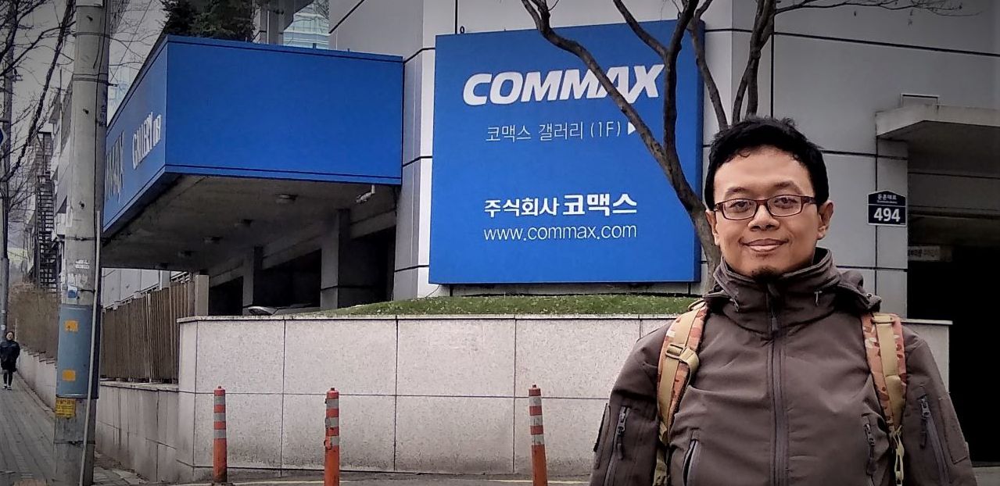
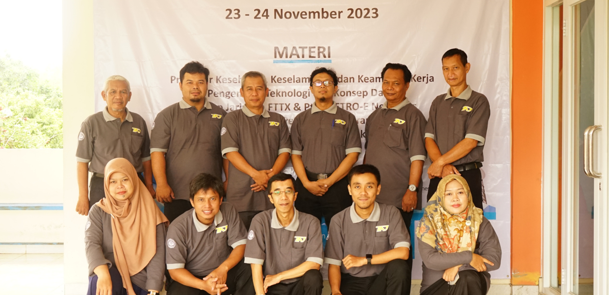
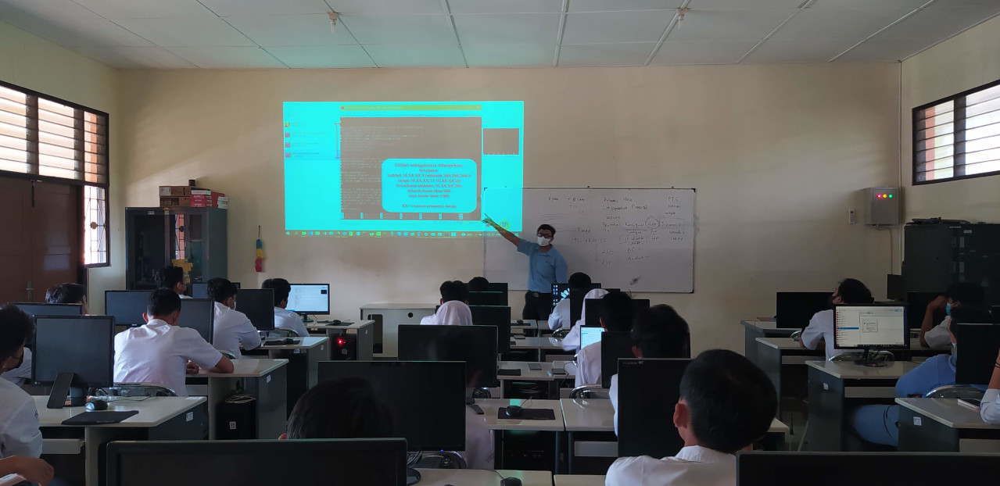
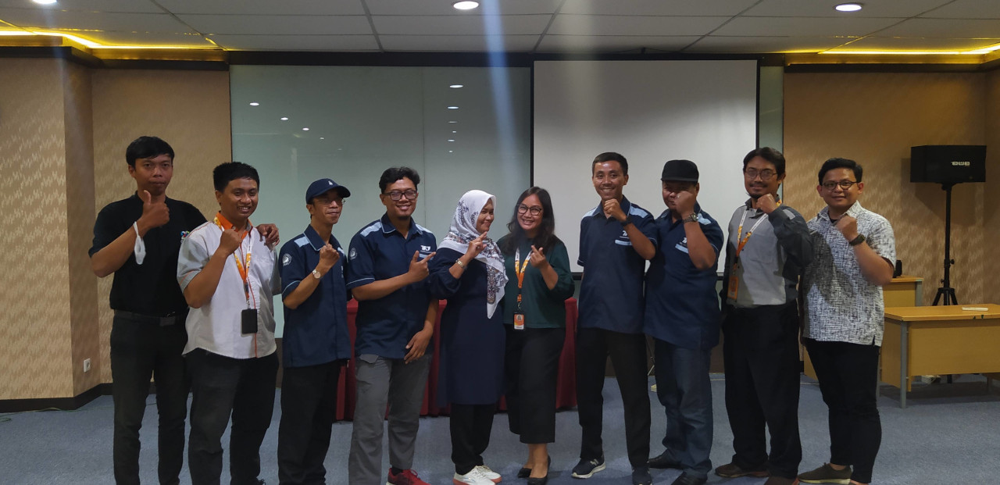
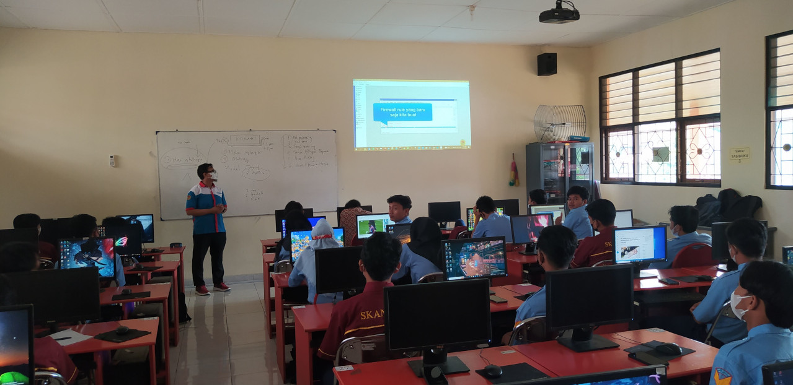
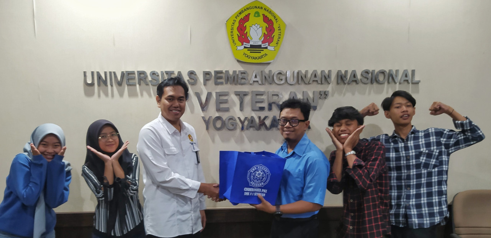
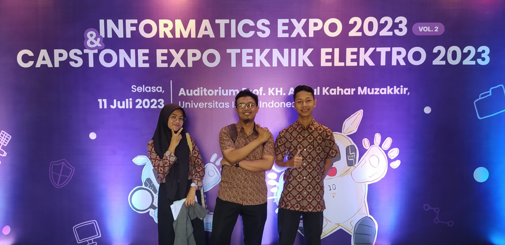

My Working Experiences







Head of Computer and Network Engineering Department
2021 - now & 2014 - 2018 at State Vocational High School Seyegan
Roles and Responsibilites:
- Prepare a work program
- Coordinating teacher tasks in learning
- Coordinate the development of teaching materials
- Map resource needs for learning
- Map the world of relevant industries
- Carry out industrial work practice programs
- Carry out competency tests
- Take inventory of skills program learning facilities
- Report the achievements of the work program
Tutor Teacher for Teacher Professional Education
2021 - now at State Professional Education Program - Yogyakarta State University
Roles and Responsibilites:
- Accompany lecturer in guiding students in learning tool and teaching practice activities
- Assess students performance
- Assess students portfolios
Deputy Principal for Industrial Cooperation and Public Relations
2018 - 2021 at State Vocational High School Seyegan
Roles and Responsibilites:
- Create a work program
- Establish cooperation with industry
- Organize special job fairs
- Coordinate field work practices
- Coordinate school promotions through the media
- Establish collaboration with universities
Computer and Network Engineering Teacher
2014 - now at State Vocational High School Seyegan
Roles and Responsibilites:
- Design lesson plans
- Create instructional materials
- Deliver lessons
- Evaluate student progress through tests, projects, and other forms of assessments
Computer and Information Management Skills Teacher
2009 - 2014 at State Vocational High School Seyegan
Roles and Responsibilites:
- Design lesson plans
- Create instructional materials
- Deliver lessons
- Evaluate student progress through tests, projects, and other forms of assessments
Open University Tutor for Computer Literacy Subject
2009 - 2010 at State Open University
Roles and Responsibilites:
- Design lesson plans
- Create instructional materials
- Deliver lessons
- Evaluate student progress through tests, projects, and other forms of assessments